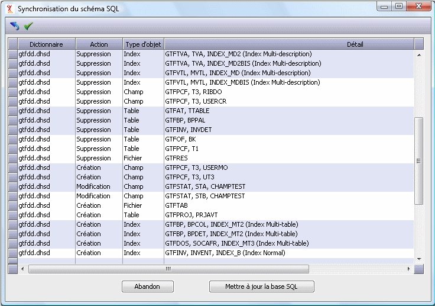
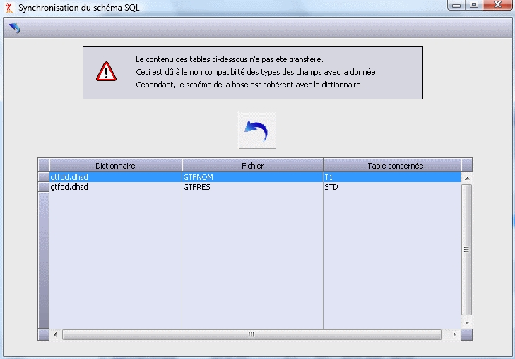

Avant de lancer le traitement de synchronisation, il faut :
Avoir correctement configuré la connexion à la base dans XPSQL (base de données, type de base). Ceci est normalement le cas puisque la synchronisation concerne des bases existantes.
Déconnecter tous les utilisateurs. En effet le traitement ouvre les fichiers concernés par la synchronisation en mode « réservé ».
Avoir fait une sauvegarde complète de la base de données. En effet, s’il se produit une erreur ou une interruption au cours de la synchronisation, il y a un risque d’incohérence entre le dictionnaire de données et le schéma de la base. L’ensemble des tables ne sera probablement pas au même niveau de mise à jour.
Le bouton « Synchroniser le schéma SQL » (ainsi que le sous-menu « Schéma SQL » du menu « Synchronisation ») permet de lancer l’utilitaire de synchronisation du schéma SQL existant avec une nouvelle version de ce schéma. L'utilitaire demande le chemin du ou des nouveaux dictionnaires. Seuls les fichiers marqués comme « valides » dans XPSQL seront traités.
Le traitement commence par mettre à jour le fichier paramètres FHSQL.dhfi en ajoutant les nouveaux fichiers à partir du modèle (FhsqlDivalto.dhfi).
On peut choisir de voir au préalable les changements détectés durant l’analyse des dictionnaires, avant de confirmer la mise à jour de la base de données (choix par défaut).

Chaque ligne représente une action. On y trouve le dictionnaire concerné, le type d’action (suppression, modification, création), le type d’objet concerné (fichier, table, champ, index) et le détail :
Pour le fichier, le détail se résume au nom du fichier.
Pour une table, on a <nom du fichier>, <nom de la table>.
Pour un champ, on a <nom du fichier>, <nom de la table>, < nom du champ>.
Pour un index, on a <nom du fichier>, <nom de la table>, <nom de l’index> (<type d’index>).
Les actions sont classées par dictionnaire et par ordre d’exécution.
Note :
Les actions nécessitant plusieurs traitements sont résumées en une seule ligne dans le tableau. Par exemple, pour une modification du type d’un champ utilisé dans un index, on verra l’action « Modification – Champ – <fichier>, <table>, <champ> » mais pas les actions de suppression, de recréation de l’index concerné et de garnissage de l’index.
Pendant la mise à jour de la base SQL, il n’y a aucun moyen d’arrêter la progression. Si une erreur se produit durant l’analyse des dictionnaires, une fenêtre vous en avertira. Pour avoir des précisions sur l’erreur, il faut regarder dans le journal d’erreurs.
Après une synchronisation réussie :
Les versions des fichiers sont mises à jour dans la liste.
Si un fichier a été supprimé, il est retiré de la liste.
Les anciens dictionnaires de données sont archivés dans le sous-répertoire /divalto/ « nom de base sql » /back.
Les nouveaux dictionnaires de données sont copiés dans le répertoire /divalto/ « nom de base sql ».
Une fois la synchronisation terminée, le cache des dictionnaires du serveur est automatiquement vidé.
Il y a trois types d’échec :
La synchronisation n'a pas pu démarrer car au moins des fichiers concerné n'a pu être réservé.
Pour ce type d’erreur :
La mise à niveau n'est pas effectuée ;
Le programme de synchronisation affiche un message.
Avant de relancer la synchronisation, il faudra déconnecter tous les utilisateurs.
Une erreur fatale au niveau du serveur SQL.
Pour ce deuxième type d’erreur :
La mise à niveau est stoppée ;
L’erreur est journalisée dans le fichier ferror.log, consultable à partir de la console d’administration ;
Avant de relancer la synchronisation, il faudra restaurer la base.
Une erreur SQL au moment du transfert des données existantes vers les nouvelles tables (lors de la modification d’un champ, par exemple).
Pour ce troisième type d’erreur :
La mise à niveau n’est pas stoppée ;
Les tables concernées sont vides ou partiellement garnies;
Le schéma est cohérent avec le dictionnaire ;
Un récapitulatif des tables concernées est affiché :
